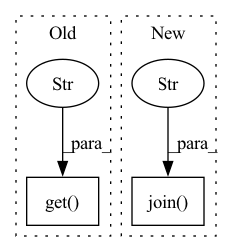

Pattern ID :28460

Before Change
f = Flow().load_config("flow-index.yml")
with f:
data_path = os.path.join(os.path.dirname(__file__), os.environ.get("JINA_DATA_FILE", None))
print(f"Indexing {data_path}")
url = f"http://0.0.0.0:{f.port_expose}/index"
After Change
data_dir = os.path.join(dataset_name, os.environ["JINA_TMP_DATA_DIR"])
with f:
data_path = os.path.join(data_dir, f"{dataset_name}_base.fvecs")
print(f"Indexing {data_path}")
url = f"http://0.0.0.0:{f.port_expose}/index"
In pattern: SUPERPATTERN
Frequency: 3
Non-data size: 2
Instances
Fragment ID: 84211239
Project Name: jina-ai/examples
Commit Name: bb48f1c44f1700d78478aca848303625015dcc1b
Time: 2021-04-26
Author: rutuja.r.surve@gmail.com
File Name: advanced-vector-search/app.py
M Class Name: AnonimousClass
N Class Name: AnonimousClass
M Method Name: index_restful(1)
N Method Name: index_restful(1)
M Parent Class:
N Parent Class:
M File Name: advanced-vector-search/app.py
N File Name: advanced-vector-search/app.py
M Start Line: 73
M End Line: 73
N Start Line: 73
N End Line: 77
'>
Before Change
def __init__(self, **kwargs):
encoder_kwargs = kwargs.get("encoder_kwargs") or {}
encoder_cls_key = encoder_kwargs.get("obs_encoder_cls", None)
data_root = kwargs.get("data_root")
permutation_file = "data/jigsaw_permutations_1000.npy"
algo_hardcoded_kwargs = dict(encoder=JigsawEncoder,
decoder=JigsawProjectionHead,
After Change
encoder_kwargs = kwargs.get("encoder_kwargs") or {}
encoder_cls_key = encoder_kwargs.get("obs_encoder_cls", None)
_this_file_dir = os.path.dirname(os.path.abspath(__file__))
data_root = os.path.abspath(os.path.join(_this_file_dir, "../../../"))
permutation_file = "data/jigsaw_permutations_1000.npy"
'>
Fragment ID: 84211246
Project Name: humancompatibleai/eirli
Commit Name: d6e78d28a701468e4370830fbd4990d2a98654ce
Time: 2021-05-17
Author: cyn0531@hku.hk
File Name: src/il_representations/algos/__init__.py
M Class Name: Jigsaw
N Class Name: Jigsaw
M Method Name: __init__(1)
N Method Name: __init__(1)
M Parent Class: RepresentationLearner
N Parent Class: RepresentationLearner
M File Name: src/il_representations/algos/__init__.py
N File Name: src/il_representations/algos/__init__.py
M Start Line: 284
M End Line: 284
N Start Line: 284
N End Line: 285
'>
Before Change
def config():
os.environ["JINA_PARALLEL"] = os.environ.get("JINA_PARALLEL", "1")
os.environ["JINA_SHARDS"] = os.environ.get("JINA_SHARDS", "1")
os.environ["JINA_WORKSPACE"] = os.environ.get("JINA_WORKSPACE", "workspace")
os.environ["JINA_PORT"] = "45678"
After Change
def config():
os.environ.setdefault("JINA_WORKSPACE", os.path.join(cur_dir, "workspace"))
os.environ.setdefault(
"JINA_WORKSPACE_MOUNT",
f"{os.environ.get("JINA_WORKSPACE")}:/workspace/workspace")
'>
Fragment ID: 84211240
Project Name: jina-ai/examples
Commit Name: 4de569187f138fc79cc6c08852f13315c1e545bc
Time: 2021-08-17
Author: jakob.kruse@jina.ai
File Name: cross-modal-search/app.py
M Class Name: AnonimousClass
N Class Name: AnonimousClass
M Method Name: config(0)
N Method Name: config(0)
M Parent Class:
N Parent Class:
M File Name: cross-modal-search/app.py
N File Name: cross-modal-search/app.py
M Start Line: 19
M End Line: 22
N Start Line: 18
N End Line: 23